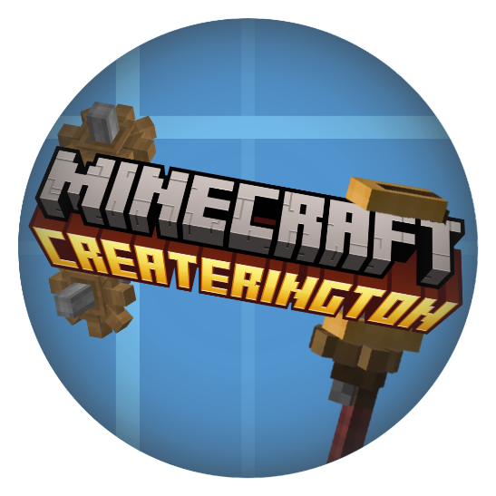

Community Portal
CREATERINGTON
A community portal for a Minecraft server, a Discord, and a web client — unified by a typed monorepo, real-time chat, and an in-game crypto economy.

A community portal for a Minecraft server, a Discord, and a web client — unified by a typed monorepo, real-time chat, and an in-game crypto economy.